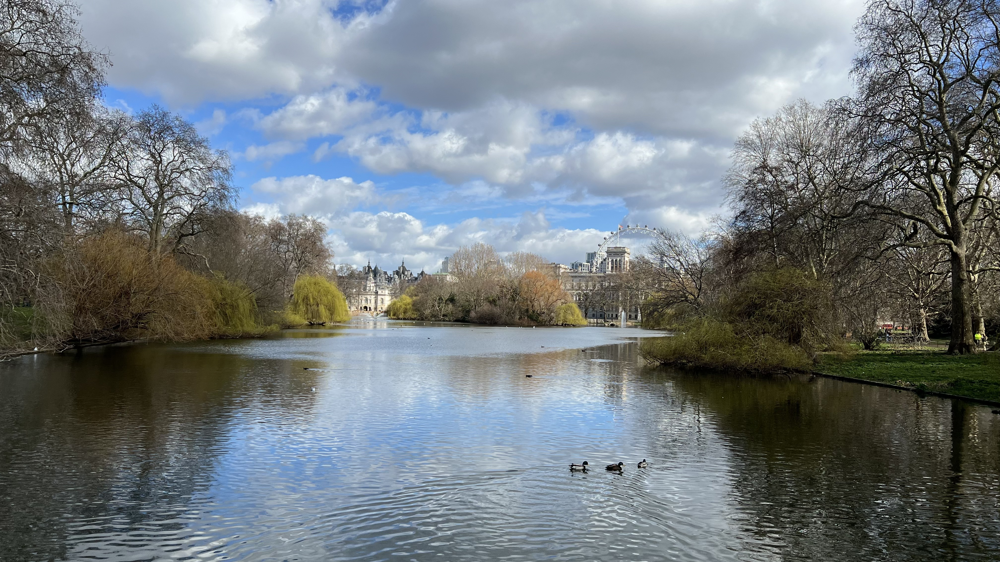

St James's Park is at the heart of ceremonial London. It is the setting for spectacular pageants, like Trooping the Colour, and is surrounded by some of the country's most famous landmarks including Buckingham Palace, Clarence House, St James's Palace and Westminster.

But there is also another side to St James's Park; it is a tranquil place. Simply relax in a deckchair and watch the world go by. The flower beds and shrubberies are enjoyed by visitors all the year round.